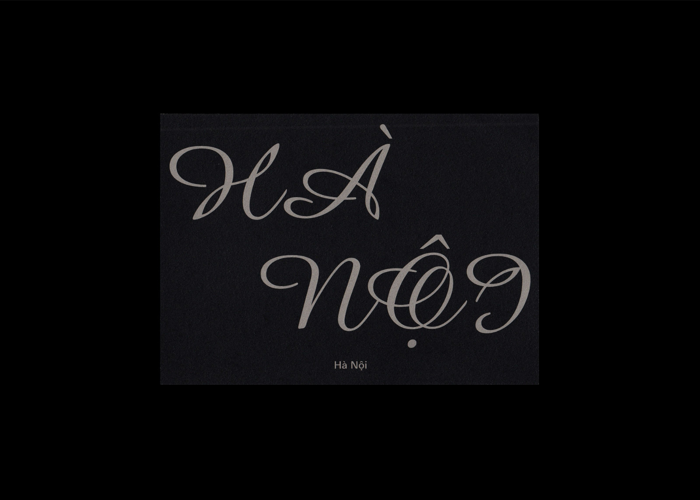

Billboards for Unlimited Limited, 720p video, 2018
Watch⇗
This project was a response to a studio brief (Unlimited Limited) which called to produce work that investigated ideas around personalisation. The Billboards are centred around how the development of the Internet has created a space where opposing ideas of 'personal' and 'impersonal' exist closely. The first part of the project examines online content that applies templates or conventions in order to seem individualised for each user, but are ultimately created to be mass-consumed.
Watch⇗
This project was a response to a studio brief (Unlimited Limited) which called to produce work that investigated ideas around personalisation. The Billboards are centred around how the development of the Internet has created a space where opposing ideas of 'personal' and 'impersonal' exist closely. The first part of the project examines online content that applies templates or conventions in order to seem individualised for each user, but are ultimately created to be mass-consumed.


Untitled book for Unlimited Limited, 52 pages, 107.9 × 174.6 mm, 2018
This supplementary publication is a glimpse into my personal Internet usage. It is an examination of the online experience as simultaneously curated by individual users, along with being constructed by a multitude of facets including marketing, algorithms and social standards.
This supplementary publication is a glimpse into my personal Internet usage. It is an examination of the online experience as simultaneously curated by individual users, along with being constructed by a multitude of facets including marketing, algorithms and social standards.

Year of the Rabbit/Cat Calendar, risograph print, 297 × 420 mm, 2023
Created for a Lunar New Year party organised by Derrick Duan and Jenn Tran. This 14-month calendar encapsulates the new Lunar cycle as it leads into the following year.
Created for a Lunar New Year party organised by Derrick Duan and Jenn Tran. This 14-month calendar encapsulates the new Lunar cycle as it leads into the following year.
Sailing Stones in Death Valley, 48 pages, 148 × 210 mm, 2021; with Sujin Jung for George Paton Gallery
A digital exhibition catalogue that forms the graphic identity and digital presence for the group exhibition: Sailing Stones in Death Valley. The artists' work demonstrate a trans-material approach and this sense of motion is highlighted through the catalogue.
A digital exhibition catalogue that forms the graphic identity and digital presence for the group exhibition: Sailing Stones in Death Valley. The artists' work demonstrate a trans-material approach and this sense of motion is highlighted through the catalogue.
A Book of Sorts for Unconventional Publishing, 68 pages, 110 × 160 mm, 2020
The first aim of this brief was to make a book that was self-reflexive, that is a book that refers to itself, and its conventions and creation. This is done by taking elements particular to books and subverting them, such as replacing the page numbers with symbolic markers which move as the book progresses. Also, the contents page (slash front cover) offers loose descriptions and vague references to what each double-spread contains. The second aim was to draw associations between various “things”. The book meanders between these “things” and their connections, which are made through visual or thematic similarities.
The first aim of this brief was to make a book that was self-reflexive, that is a book that refers to itself, and its conventions and creation. This is done by taking elements particular to books and subverting them, such as replacing the page numbers with symbolic markers which move as the book progresses. Also, the contents page (slash front cover) offers loose descriptions and vague references to what each double-spread contains. The second aim was to draw associations between various “things”. The book meanders between these “things” and their connections, which are made through visual or thematic similarities.
IM/PERMANENCE, 140 pages, 203 × 254 mm, 2020; for Monash University, Faculty of Fine Art
This is an exhibition publication for the work of the Fine Art graduates at Monash University. This publication presents the individual artistic practices of the cohort, as well as their collective voice. The creation of this book was done remotely and digitally, and it was printed on-demand through Blurb.
This is an exhibition publication for the work of the Fine Art graduates at Monash University. This publication presents the individual artistic practices of the cohort, as well as their collective voice. The creation of this book was done remotely and digitally, and it was printed on-demand through Blurb.


Phở, 56 pages, 176 × 250 mm, 2018
A risograph printed publication that examines the various historical and cultural contexts of phở, from its unclear origins to its recent popularisation. This also includes personal observations and familial anecdotes of the dish.
A risograph printed publication that examines the various historical and cultural contexts of phở, from its unclear origins to its recent popularisation. This also includes personal observations and familial anecdotes of the dish.



Souvenir, series of postcards, dimensions varied, 2019–
An ongoing series of postcards based on places I have visited, using photos and video taken on location. This project revolves around capturing a sense of place and evoking specific experiences, as well as experimentation with type and image.
An ongoing series of postcards based on places I have visited, using photos and video taken on location. This project revolves around capturing a sense of place and evoking specific experiences, as well as experimentation with type and image.


Watching You Watching Me, 740 pages, 210 × 297 × 42 mm, 2018
WYWM is an exploration of book-making using conditional design and print-on-demand technology. The goal was to define a system to create a large publication within a short time span, this was done by utilising automated and digital processes. This project explores the moods and meanings of a shared gaze, using art collated from the Met Museum online collection.
WYWM is an exploration of book-making using conditional design and print-on-demand technology. The goal was to define a system to create a large publication within a short time span, this was done by utilising automated and digital processes. This project explores the moods and meanings of a shared gaze, using art collated from the Met Museum online collection.


Watching You Watching Me, website, 2018
This promotional website for the book Watching You Watching Me expands on the idea of “the look” by directing the gaze toward the user. By putting the contents of the book online a mutation of the content occurs and it is placed into the public sphere.
This promotional website for the book Watching You Watching Me expands on the idea of “the look” by directing the gaze toward the user. By putting the contents of the book online a mutation of the content occurs and it is placed into the public sphere.


Colour Diary, 64 pages, 176 × 250 mm, 2018
Part sketchbook, retrospective journal and colour swatch compilation, this publication collects fragments of a trip to Japan and South Korea.
Part sketchbook, retrospective journal and colour swatch compilation, this publication collects fragments of a trip to Japan and South Korea.
:^)